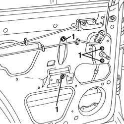

7010D36 rear side door window mechanism - check position and fastening with door panel removed
- Path
- Procedures > 70 FITTINGS > 7010 PASSENGER COMPARTMENT REAR SIDE DOORS > 7010D rear side door window glasses > 7010D36 rear side door window mechanism - check position and fastening with door panel removed
- Kind
- repair procedure (removal / refitting; the operation number is the code)
- Applies to
- all engines; all production periods
- Interactive page
- https://sloeber94.github.io/elrnDB-a156/en/#/3238673
Applies to: all engines; all production periods
7010A04 rear side door water guard protection - r r or arrange with door panel removed
1. Check the correct window regulator fastening.

Applies to: all engines; all production periods
Check the function of the window mechanism.